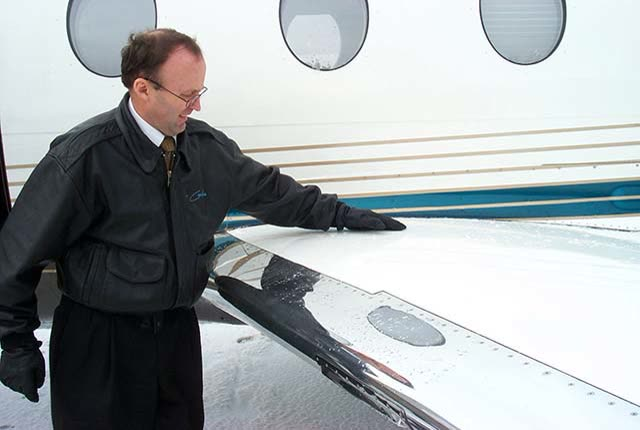

Lesson 12: Inspections: Walk-around, Clear Ice and the Post-treatment Check
Learning objectives
- Perform a winter-specific exterior inspection.
- Know when a tactile check for clear ice is required.
- Describe the purpose and scope of the post de-icing/anti-icing check.

The winter walk-around
A cold weather exterior inspection takes longer and needs more light. Use a strong torch or the floodlights at night. In addition to the normal items, check:
- Wings, tail and control surfaces — upper surfaces where they can be seen. Use steps or an elevated platform where required, because frost on the upper wing can be invisible from the ground.
- Engine inlets and fan blades — free of ice; fan rotates freely (where permitted to check). Propellers clear.
- Probes, static ports, AoA vanes, drains and vents — clear, covers removed.
- Landing gear, wheel wells, brakes and tyres — no ice or packed snow; tyres not frozen to the ground.
- Fuel tank vents and doors and seals — free of ice.
- All covers and plugs removed and stowed.
Clear ice — when a tactile check is required
A tactile (hands-on) check of the wing upper surface, or the use of an approved remote ice detection system, is required when clear ice may be present. Typical conditions:
- the aircraft has cold-soaked fuel (after a long or high-altitude flight, or after uploading cold fuel);
- there is or has been precipitation, fog, high humidity or frost;
- the OAT is near or even above freezing.
Many aircraft types have a defined area for the tactile check. On aircraft with rear-mounted engines it is often mandatory before every departure in these conditions. Ice that sheds from the wing at rotation can be ingested by both engines (see the SAS 751 case in Lesson 30).
A wet-looking wing in cold conditions is not proof of a clean wing. If in doubt, touch it — or have it de-iced.
Post de-icing/anti-icing check
After treatment, a qualified member of the de-icing provider must check all treated surfaces from points with a clear view. Where needed this includes the upper wing from an elevated position, the horizontal and vertical stabilisers, and the control surfaces. The aircraft must be clean, with an even layer of anti-icing fluid where anti-icing was applied.
Completion of this check is confirmed in the anti-icing code. Without it, the aircraft must not be dispatched. The commander may still ask for any area to be re-checked or re-treated.
Commander's acceptance
The commander must be satisfied that the aircraft is clean. Use the information available to you: the code, your own observation of the wings, reports from cabin crew, and the weather since treatment.
Key takeaways
- Winter walk-around: upper surfaces, inlets, probes, gear, vents and covers.
- Cold-soaked fuel + moisture → clear ice risk → tactile check or approved detection.
- The post de-icing/anti-icing check is mandatory and confirmed in the anti-icing code.
Knowledge check
Which situation most clearly calls for a tactile check of the wing?